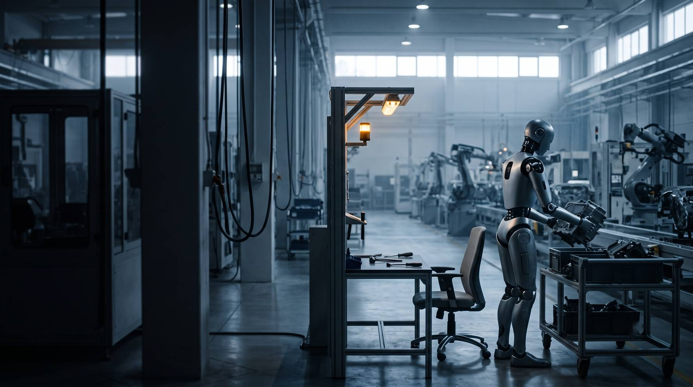
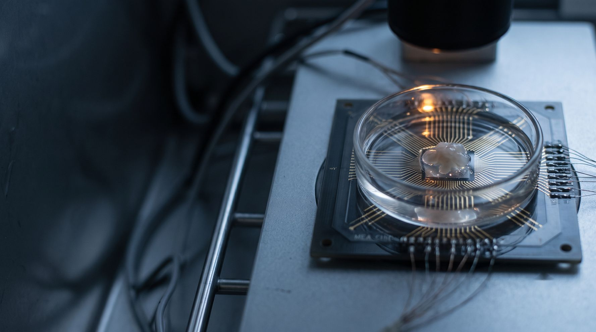

AI가 AI 개발을 돕기 시작한 뒤의 10년
AI가 맡는 업무 크기가 얼마나 빨리 커지는지와 전문가의 자동화 예상 연도가 어떻게 움직였는지를 공개 데이터로 쟀습니다. 두 관계를 이어 2036년 한국 일자리의 대체 압력(AI·자동화로 사람이 빠질 것으로 본 일자리 수)을 추정했습니다.
업무 크기 = AI가 절반 이상 성공하는 과제를 사람이 하면 걸리는 시간
같은 시기 AI 회사들은 다음 AI 개발에 AI를 쓰기 시작했습니다. 이를 재귀적 자기개선이라 부르며 두 변화의 인과는 따로 따지지 않았습니다
이제 진로를 정하는 대학생 그리고 신입부터 중간 관리자까지의 직장인
AI가 맡는 업무 크기가 두 배가 되는 기간이 얼마나 짧아졌는지 측정
전문가가 예상한 AGI(사람 수준의 범용 AI) 연도와 모든 직업 자동화 연도가 몇 년씩 당겨졌는지 계산
미국 770개 직업과 한국 직업·연령 통계로 변화를 확인하고 2036년까지 추정
AI가 맡는 업무 크기가 두 배로 느는 데 걸린 기간(2024년 이후). 2019년부터 재면 188일 기술
AI 능력이 두 배가 될 때 ‘모든 직업 자동화’ 예상 연도가 ‘AGI’ 예상 연도보다 더 많이 당겨진 배수(설문 세 번)
2022–2026년 한국 청년 일자리 감소 28.5만 개 가운데 AI 노출이 큰 업종에서 줄어든 비중 한국은행
화살표는 이 덱 모형의 가정이고 상자 안 숫자는 뒤 장들의 측정값입니다.
2024-10 → 2026-04. Anthropic CFO는 “90% 이상”(2026-05 TechSpot) 2차 · 자체 보고
2025-10 목표 ‘2026년 9월 인턴 · 2028년 3월 연구자’ 중 인턴은 자체 측정 달성. 4–8시간 과제 절반 넘게 사람이 개입 2차
Gemini 핵심 연산 23% 가속 · 학습 시간 1% 단축(2025-05) 직접
세로축은 AI가 절반 이상 성공하는 과제를 사람이 하면 걸리는 시간입니다(METR 50% 시간지평). 그 시점의 최고 기록 모델만 · 로그 눈금
METR Time Horizon 1.1 원본 YAML(2026-05 갱신) · 가로축은 실제 날짜 간격 기술
업무 크기가 두 배로 느는 데 걸린 기간. 최근 점만 볼수록 짧아집니다.
2019년 이후 전체
188일
2023년 이후(95% 구간 104.4–158.0일)
129일
2024년 이후
105일
METR 원자료로 직접 회귀해 188일과 129일을 그대로 재현했습니다. 2024년까지의 점만으로 2025–26년을 예측하면 속도가 일정하다는 가정은 실제 값을 약 5배 낮게 잡습니다. 속도가 빨라진다고 본 모형이 가장 가까웠습니다 시간순 검증
회사의 ‘목표’와 ‘예측’은 다르고 AGI의 정의도 회사마다 다릅니다.
AI 연구를 스스로 하는 AI는 2028년 3월
강력한 AI는 빠르면 2026년 말–2027년
AGI는 2030년 앞뒤 1년
AI Impacts 전문가 설문(직접) · Metaculus 질문 5121(2차 인용) · 두 계열은 AGI 정의가 달라 따로 표시 기술
2016년 설문과 2024년 설문 사이 19년 당겨졌습니다. 남은 햇수 ≈ 32.5 − 3.2 × (능력이 두 배가 된 횟수) · 상관계수 r = −0.97(−1에 가까울수록 한쪽이 늘면 다른 쪽이 줄어드는 관계가 강함) n=3
예측 커뮤니티 Metaculus는 2025년 이후 AI 능력이 더 올랐는데도 예상을 2030년에서 2033년으로 늦췄습니다(2차 인용)
AI 능력이 두 배가 될 때마다 앞당겨진 햇수
11.2 ÷ 3.2 = 3.5배 · r = −0.97, −0.95
AGI가 온 뒤 모든 직업이 자동화되기까지
2022년 설문 → 2024년 설문
같은 설문에서 같은 전문가들에게 물은 두 예상 연도 · AI Impacts Expert Survey on Progress in AI 기술
McKinsey 추정 · 지금 하는 업무의 절반이 자동화되는 해
2017년 보고서의 2055년에서 10년 당겨짐 · 중간 시점 추정(범위 2030–2060) 직접
미국에서 2030년까지 자동화될 수 있는 근로시간 비중
생성형 AI를 반영하기 전 추정은 21.5%였습니다(2023년 7월) 직접
점 하나 = 직업 하나(2022년 고용 1만 명 이상, 639개) · 점 크기 = 고용 규모 · BLS OEWS 2022·2025 · Eloundou 외 β 기술
순위 상관 ρ(Spearman 방식)
다시 뽑기(부트스트랩) 95% 구간이 −0.10에서 0.065 사이라 0과 구별되지 않습니다
노출 지표를 Microsoft·Anthropic 것으로 바꿔도 |ρ| ≤ 0.05. 사분위 범위(IQR) 기준 이상치 후보 30개를 빼도 0.033
노출도 5분위별 합계 고용 변화 2022→2025
분위마다 직업 154개 · 막대는 0에서 시작 기술
노출 상위 10% 직업 77개
2022→2025년 합계. 나머지 90% 직업은 +5.5%. 상위 직업의 62%는 고용이 줄었고 나머지는 37%만 줄었습니다
경영·재무·관리처럼 노출이 큰 대분류가 경기 덕에 함께 늘면서 대분류 안의 음의 관계를 덮습니다.
노출과 고용에 함께 영향을 줄 수 있는 요인 · 금리 인상 뒤 테크 채용 조정 · 원격근무 확산 · 직업 안 연령 구성 · 해외 이전과 업무 재분류. 그래서 결론은 ‘함께 움직인다’(기술)까지만 씁니다
18개 직업 대분류 중 음의 상관이 나온 곳
사무·행정 ρ = −0.29 · 컴퓨터·수학 −0.35. 대분류별 평균 차이를 빼고 다시 재면 r = −0.078(95% 구간 −0.16에서 0.004)
| 모형 · 2023→2025 고용 변화 · 직업 743개 | 교차검증 R² |
|---|---|
| 기준선 · 학습 평균 | −0.006 |
| 릿지 회귀 · 노출도 포함 | 0.089 |
| 릿지 회귀 · 노출도 뺌 | 0.079 |
| 그래디언트 부스팅 · 노출도 포함 | 0.089 (학습 R² 0.501 → 과적합 신호) |
| 그래디언트 부스팅 · 노출도 뺌 | 0.103 |
노출도를 넣어 늘어난 설명력(R²)
순열 중요도 기준 직업 규모 0.24 · 이전 기간 고용 변화 0.20 · 대분류 0.18 · 임금 0.14 · 노출도 3종은 0.03–0.06에 그침
2019년 = 100 · 세로축 80부터(변화 비교용) · KOSIS 직업별 취업자(DT_1DA7E08S_NEW) · 9개 대분류 합 = 전체 검산 기술
2019→2025년 기준. AI 노출이 낮은 직업군이라 온라인 쇼핑·무인화와 함께 줄었을 가능성이 큽니다
한국고용정보원과 국회예산정책처도 노출도와 취업자 증감의 상관은 매우 약하거나 없다고 봅니다 (잠정)
직업 대분류 총량으로는 AI 영향이 아직 드러나지 않습니다.
한국 청년(15–29세) 일자리 감소, 2022.6→2026.6. 94%가 AI 노출이 큰 업종에서 줄었고 같은 기간 50대는 23.0만 개 증가
미국 22–25세가 AI 노출이 큰 직업에서 덜 노출된 직업의 또래보다 고용이 낮은 정도(2026년 6월). 경력자는 차이 없음
한국 공인회계사 합격자 중 수습으로 등록한 비율, 2022→2025(10월 기준)
AI 능력이 두 배가 될 때마다 미국 격차 약 1.3%p · 한국 노출 업종 청년 일자리 약 2.5만 개 감소(추정)
로봇 학습 데이터가 두 배가 되는 데 걸린 기간. 1만 시간(2024-10) → 27만 시간(2025-11), 회사 발표
Waymo 무인 택시의 주간 유료 운행이 두 배가 되는 데 걸린 기간. 5만 건(2024-05) → 50만 건(2026-03)
인터넷 영상(약 10억 시간)이 로봇 조작 데이터(약 30만 시간)보다 많은 정도(Bessemer 추정)

따라잡는 햇수 = 격차를 메우려면 두 배가 돼야 하는 횟수 11.7번 × 로봇 데이터가 두 배가 되는 기간
오픈그래프랩스(서울 · 촉각 글러브·영상 수집) · Scale AI(10만 시간 이상 · 회사 주장) · Generalist AI(주 1만 시간씩). 한국 로봇 밀도는 제조업 근로자 1만 명당 1,220대로 세계 1위(미국 307대)
데이터센터 전체 전력 증가
IEA 415TWh(2024) → 945TWh(2030 전망)로 계산한 연평균(추정). Epoch AI는 2030년 무렵 가장 먼저 걸릴 제약으로 전력을 지목
가장 큰 AI 모델 학습에 드는 전력
학습 연산 증가 연 4.1배를 칩 효율 개선 연 1.41배로 나눈 값. Epoch AI 전망 범위는 연 2.2–2.9배 추정

하는 일이 달라 직접 비교는 아닙니다. 오가노이드(배양한 뇌세포 덩어리) 칩 CL1은 뉴런 약 80만 개 · 대당 3만 5천 달러 · 수명 최대 6개월. 전력 ‘대당 약 25W’는 회사 주장이고 독립 측정은 없습니다. 지금 하는 일은 탁구 게임(퐁)과 화자 구별 정도
전력 1W당 연산(TOPS/W)은 Intel Hala Point 15 이상(회사 주장 · 특정 조건) 대 엔비디아 H100 GPU 5.65. 데이터센터 학습보다 기기 안 추론에 쓰일 전망
대체 본격화 = AI가 그 업무를 해낸 뒤 회사 절반이 도입한 해. 몸을 많이 쓰는 직업일수록 늦다고 봅니다. 최종 규모는 기관 추정에 맞추고 모형은 시점만 정합니다.
| 시나리오 | AI 능력이 두 배가 되는 기간 | 회사 도입까지 | 로봇 데이터 시차 |
|---|---|---|---|
| 빠름 | 105일 유지 | 2.6년 | 3년 |
| 기준 | 129일 → 2028년부터 188일 | 4년 | 5년 |
| 신중 | 188일 → 2028년부터 1년 | 6년 | 8년 |
회사 도입 2.6년 = ChatGPT 출시 뒤 한국 직장인 과반(51.8%)이 업무에 생성형 AI를 쓰기까지(한국은행 2025-22) · 6년 = 기업 AI 활용률 1.4%→6.1%(2017→2023 · KDI 2026-01) · 로봇 데이터 시차 = 몸 쓰는 일이 로봇 학습 데이터를 기다리는 햇수(20장) 추정 · 가정 공개
| 사무직 · 기준 시나리오 추정 | |
|---|---|
| AI가 한 주짜리 업무를 해내는 해 | 2027.6 |
| 회사 도입까지 | +4년 |
| 몸을 쓰는 정도 0.05 × 로봇 데이터 시차 5년 | +0.25년 |
| 대체 본격화 | 2031.8 |
| 규모 | |
|---|---|
| 2025년 사무직 취업자 | 516.2만 명 |
| AI·자동화 고위험 비중 | × 49.8% |
| 사람이 빠지는 비율 | × 0.5 |
| 최대 대체 압력 | 128.5만 명 |
실제 업무가 METR 과제보다 10배 복잡하다고 가정하면 각 연도가 1–3년 늦어집니다.
세 시나리오 모두 같은 결론 · 출발점 Claude Mythos(초기판)가 80% 확률로 해낸 업무 크기 185.9분(2026-04-07, METR 실측) · 점선 = 직급별로 가정한 업무 크기 · 파란 띠 위쪽은 측정이 아닌 외삽 추정
큰 숫자는 대체 본격화(회사 절반이 도입한 해), 작은 숫자는 AI가 그 업무를 80% 확률로 해내는 해입니다. *는 2036년 이후
모형 본격화는 2030년(기준)이지만 신입 채용 감소는 2023년부터 관찰됐습니다(한국은행 2026-19 · Stanford 2026)
기준 시나리오 2036년
취업자의 11.1%(추정)
빠름 378만(13.1%) · 신중 165만(5.7%).
사람이 빠지는 비율을 0.5 대신 0.3이나 0.7로 잡으면 기준은 192만–448만 명
대체 압력 = AI·자동화 고위험 일자리 × 실제로 사람이 빠지는 비율 0.5 · 누적(만 명) · 새로 생기는 일자리 미반영 · 회색 점선은 KDI 추정(AI 단독·경제성 기준) · KOSIS 2025 취업자 2,876.9만 명 추정
기준 시나리오의 직업군별 2036년 대체 압력 (취업자 대비 %)
φ = 몸을 쓰는 정도(0–1). 클수록 늦게 시작 추정
판매직과 장치·기계 조작직은 몸을 쓰는 정도가 커서 한두 해 늦게 시작합니다
고위험 비중이 1.3%라 일자리가 없어지기보다 일하는 방식이 바뀔 가능성이 큽니다
2026–2027
AI가 하루(2026년)·한 주(2027년)짜리 업무를 해낸다고 봅니다. 콜센터와 신입 개발자 채용은 이미 줄었습니다(한국은행·BLS 실측).
2028–2030
한 달짜리 업무까지 가능(2028년). 판매직도 2030년에 도달해 누적 81만 명. 전력 제약이 커진다고 가정한 시기입니다.
2031–2033
로봇 데이터를 기다린다고 가정한 시기. 대리·과장급이 본격화하고 부장급이 뒤따릅니다.
2034–2036
누적 약 320만 명(11.1%) · 추정 범위 165만–378만 명. 인구 감소와 겹쳐 해고보다 ‘채용하지 않는’ 모습일 가능성이 큽니다.
| AI 영향으로 볼 수 있는 근거(2차 인용) | 쟁점 | 다른 원인으로 설명하는 근거(2차 인용) |
|---|---|---|
| 청년 일자리 감소의 94%가 AI 노출 업종(한국은행) | 청년 고용 | 원격근무가 청년 대졸 실업 증가의 64% 설명(NY Fed) |
| 노출 상위 10% 직업 고용 +0.3% 대 나머지 +5.5% | 직업 구성 | 직업 구성 변화가 인터넷 보급기보다 약 1%p 빠른 수준(Yale Budget Lab) |
| 22–25세 노출 직업 고용 격차 19%(Stanford) | 소득과 시간 | 덴마크 소득·근로시간 효과는 ±2% 이내에서 0(Humlum 외) |
| 감원 발표의 AI 사유 2026년 1월부터 9월까지 12.0만 명 1위 사유(Challenger) | 기업의 결정 | Klarna는 AI 상담 뒤 품질 문제로 상담원을 다시 채용(Bloomberg 보도) |
AI 노출이 높은 직업일수록 2023년 이후 청년·신입 고용이 더 줄었나
조작적 정의: 청년 = 15–29세 · 노출 = Eloundou β를 한국 직업분류 KSCO 직업마다 연결한 값
| 단계 · 무엇을 | 데이터(한 행의 의미) | 방법 · 수업 연결 |
|---|---|---|
| 2 확보 직업 × 연령 × 연도 표 | KOSIS 지역별고용조사 직업 중분류 × 연령(한 행 = 직업·연령·반기) · 미국 OEWS 2017–2025 | sources.csv에 URL·행 수·해시 (2주) |
| 3 진단·정제 분류 변경·결측·작은 셀 | KSCO 7차 개정 연결표 | 진단과 처리 분리 · cleaning-log (3주) |
| 4 기술 분포·이상치 후보 | 직업별 변화율 | 평균·중앙값·SD(ddof 명시) · z와 IQR 양쪽 울타리 (4·5주) |
| 단계 | 무엇을 | 방법 · 수업 연결 |
|---|---|---|
| 5 관계 | 노출 × 청년 고용 변화(직업 단위) | 산점도 · Pearson/Spearman · 이상치 전후 · 집단별 (7주) |
| 6 원인 추정 | 2023년 전후 × 노출 상하위 × 청년/중장년 패널 | 이중차분(전후 차이의 집단 간 차이) · 사전 추세 · 교란 3개 · 심슨 점검 (9주) |
| 7 예측 | 새 실측으로 관계식 재추정 → 2036 경로 갱신 | 시간순 백테스트(뒤 실측 맞히기) · 민감도 (6주 보너스) |
AI가 일자리를 ‘줄였다’(인과) · 2036년 숫자가 맞는다는 보장 · 직급별 실측(한국 공식 통계에 직급 단위 없음)
관계식마다 점 2–3개(3.5배는 설문 세 번) · 94%·사내 코드 비율은 2차 인용 · OEWS는 Wayback 사본 · 빠지는 비율 0.5를 0.3–0.7로 바꾸면 2036년 192만–448만 명
105일은 METR 원자료로 독립 재현 · 직업 상관은 노출 지표 3종·이상치 제외·집단별로 반복 · ML·KOSIS 검산
| 자료 · 기관 | 이 덱에서 | 확인 |
|---|---|---|
| METR Time Horizon 1.1 원본 YAML | AI 업무 크기 곡선 · 두 배 기간 · 2036 출발점 | 원본 내려받아 재계산(2026-05판) |
| 미국 BLS OEWS 2022–2025 · 고용 전망 2024–34·2025–35 | 직업별 고용 변화 · 상관 · ML | Wayback 원본 바이트 · 직접 계산 |
| OpenAI · Microsoft · Anthropic GPTs are GPTs · Working with AI · Economic Index | 직업별 AI 노출 3종 | 공개 데이터 직접(2023–2026) |
| AI Impacts Expert Survey on Progress in AI 2016–2024 | AGI·직업 자동화 예상 연도 | 보고서 직접 |
| 한국은행 이슈노트 2023-30 · 2025-2 · 2026-19 · 2026-25 | 노출·청년 일자리·도입률 | PDF 직접 |
| KOSIS(국가데이터처) 직업별 취업자(표 DT_1DA7E08S_NEW) | 한국 직업 대분류 추세 · 2036 모형 | 표 직접 · 합계 검산 |
| 한국고용정보원 · KDI 연구사업 2025-40 · KDI 연구보고서 2026-01 | 고위험 비중 · 교차 확인선 | PDF 직접 |